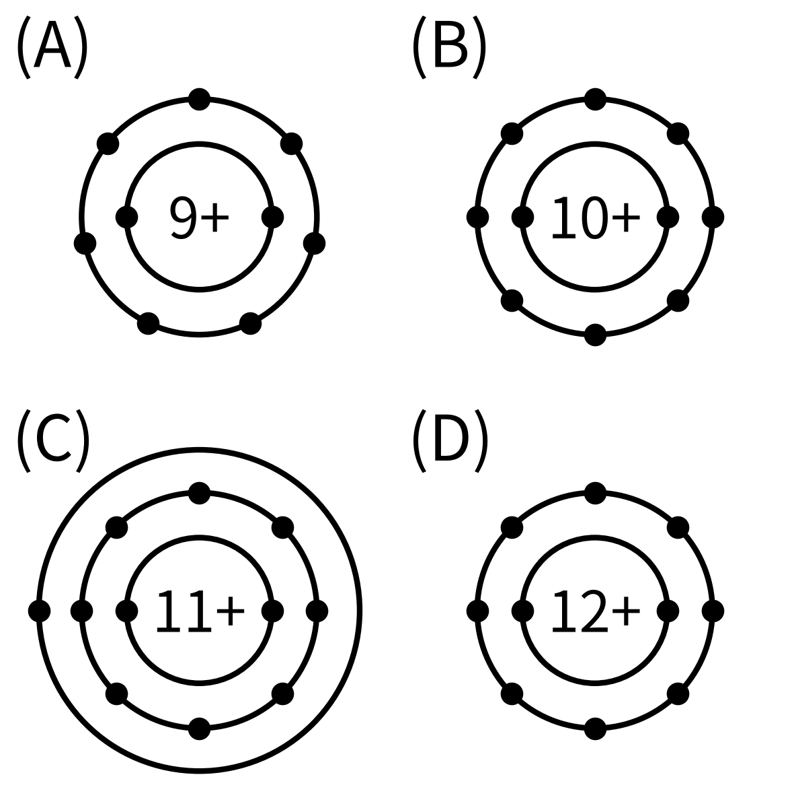

範圍：講義 p.43～48
基礎題
原子核外第 N 殼層最多能填入若干個電子？
- (A) 2N2
- (B) 50
- (C) 25
- (D) 110
- (E) 32 個
看答案與詳解
答案：(E)
〔易錯〕(A) 的 N 是殼層名稱，不是 n＝4 的代入結果。
有關殼層與能階的觀念，下列敘述何者正確？（多選）
- (A) 殼層由內而外依次稱為 A、B、C……等殼層
- (B) 殼層中與原子核的距離最近為 K 層
- (C) 電子殼層，具有的能量最高者為 K 層
- (D) 每一殼層皆有其特定的能量，稱為能階
- (E) 電子從低能階躍遷至高能階時需吸收能量
看答案與詳解
答案：(B)(D)(E)
(B) ✔ K 層最靠近原子核。
(C) ✘ K 層能量最低。
(D) ✔ 每一殼層的能量固定，稱為能階。
(E) ✔ 往高能階跳要吸收能量；跳回低能階放出能量（如焰色）。
有關原子核外的電子排列規則，下列敘述何者正確？（多選）
- (A) 電子在原子核外分布的情形稱為電子組態
- (B) 電子從 K 層開始填起，再依序填入能階較高的殼層
- (C) 主殼層 K 層最多可容納 2 個電子
- (D) 主殼層 L 層最多可容納 4 個電子
- (E) 每一殼層最多可容納 n2 個電子
看答案與詳解
答案：(A)(B)(C)
(B) ✔ 由能量最低的 K 層開始填。
(C) ✔ 2×12＝2。
(D) ✘ L 層最多 2×22＝8 個。
(E) ✘ 應為 2n2 個。
列出下列原子的電子分布情形後，比較哪一個價電子數最多？
- (A) 2He
- (B) 8O
- (C) 12Mg
- (D) 14Si
- (E) 19K
看答案與詳解
答案：(B)
價電子數：He 2（鈍氣，部分教材記為 0）、O 6、Mg 2、Si 4、K 1 ⟶ O 最多，選 (B)。
下列元素的電子排列方式何者正確？（多選）
- (A) 2He：2
- (B) 6C：2, 2, 2
- (C) 9F：2, 7
- (D) 14Si：2, 8, 3
- (E) 18Ar：2, 8, 2, 6
看答案與詳解
答案：(A)(C)
(A) ✔ He：2。
(B) ✘ C：2, 4。
(C) ✔ F：2, 7。
(D) ✘ Si：2, 8, 4（總數要 14）。
(E) ✘ Ar：2, 8, 8。
下列何項離子最外層的電子數不是 8 個？
- (A) K+
- (B) Mg2+
- (C) Al3+
- (D) Be2+
看答案與詳解
答案：(D)
最外層不是 8 個的是 Be2+，選 (D)。
某原子的電子排列為 2,8,1，下列有關此原子的敘述，哪些正確？（應選 3 項）（多選）
- (A) 價殼層為 M
- (B) 有 11 個價電子
- (C) 為鈍氣元素
- (D) 為第三週期元素
- (E) 化性與鉀相似
看答案與詳解
答案：(A)(D)(E)
(A) ✔ 最外層是第三層 M。
(B) ✘ 價電子 1 個（11 是總電子數）。
(C) ✘ 是鹼金屬，不是鈍氣。
(D) ✔ 三個殼層 ⟶ 第三週期。
(E) ✔ 與鉀（2, 8, 8, 1）價電子都是 1，化性相似。
下列哪一個原子的 L 殼層電子數為 M 殼層的兩倍？
- (A) 3Li
- (B) 6C
- (C) 14Si
- (D) 11Na
- (E) 16S
看答案與詳解
答案：(C)
要有 M 層且 L＝2M：L＝8 ⟶ M＝4 ⟶ Si，選 (C)。
下列原子或離子，何者具有與其他粒子不同的價電子數目？
- (A) F−
- (B) Na+
- (C) Ar
- (D) S2−
- (E) P
看答案與詳解
答案：(E)
P 2, 8, 5 ⟶ 5 個，與其他不同，選 (E)。
下列選項之原子與離子，哪些具有相同的電子排列？（多選）
- (A) Ca2+
- (B) Cl−
- (C) Mg2+
- (D) N
- (E) Ar
看答案與詳解
答案：(A)(B)(E)
電子數 18 者都是 2, 8, 8 ⟶ (A)(B)(E)。
以下有關原子中電子的敘述，何者正確？
- (A) 電子分布在原子核周圍，與原子核保持一定的距離作圓周運動
- (B) Be 與 He 的價電子數相同，故其化學性質相似
- (C) M 層可容納的電子數較 L 層多 10 個
- (D) A 族元素的價電子數均等於其族數
- (E) 愈靠近原子核的電子，受核引力愈大，則其能階愈高
看答案與詳解
答案：(C)
(B) ✘ Be 與 He 價電子數都是 2，但 He 是鈍氣、最外層已填滿（很穩定），Be 是活潑金屬，化性不相似。
(C) ✔ M 層最多 2×32＝18，L 層 2×22＝8，多 10 個。
(D) ✘ 8A 族的 He 只有 2 個最外層電子。
(E) ✘ 愈靠近原子核，能階愈低。
下列各元素中，哪些組的電子排列中，最外層的電子數相同？（應選 2 項）（多選）
- (A) 2He、12Mg
- (B) 3Li、11Na
- (C) 7N、14Si
- (D) 9F、18Ar
- (E) 5B、15P
看答案與詳解
答案：(A)(B)
(A) ✔ He：2；Mg：2, 8, 2 ⟶ 最外層都是 2 個。
(B) ✔ Li：2, 1；Na：2, 8, 1 ⟶ 最外層都是 1 個。
(C) ✘ N：2, 5（5 個）；Si：2, 8, 4（4 個）。
(D) ✘ F：2, 7（7 個）；Ar：2, 8, 8（8 個）。
(E) ✘ B：2, 3（3 個）；P：2, 8, 5（5 個）。
〔易錯〕本題問「最外層電子數」，He 與 Mg 相同；但 He 的 K 層已填滿，屬 8A 族（鈍氣），化性與 2A 族的 Mg 並不相似。
某基態原子的質量數為 37，且 M 殼層上有 7 個電子，則該原子所含的中子數為何？
- (A) 18
- (B) 20
- (C) 22
- (D) 25
- (E) 27
看答案與詳解
答案：(B)
中性原子：質子數＝電子數＝17（氯）。
中子數＝質量數−質子數＝37−17＝20，選 (B)。
〔易錯〕M 層有 7 個電子不代表原子序是 7；要把已填滿的 K 層 2 個、L 層 8 個一起算。
原子失去最外層電子或於最外層得到電子後，一定不會改變的有下列幾項？ ①元素種類；②化學性質；③核電荷；④電子層數；⑤價電子數；⑥核外電子總數
- (A) 2
- (B) 3
- (C) 4
- (D) 5
- (E) 6
看答案與詳解
答案：(A)
① ✔ 質子數不變，仍是同一種元素。
③ ✔ 核電荷＝質子數，不變。
② ✘ 化學性質改變，例：Na 遇水劇烈反應，Na+ 不會。
④ ✘ 失去電子時可能少一層，例：Na（2, 8, 1）⟶ Na+（2, 8）。
⑤ ✘ 價電子數改變，例：Cl（最外層 7 個）⟶ Cl−（最外層 8 個）。
⑥ ✘ 得失電子後，電子總數一定改變。
一定不變的只有 ①③ 兩項，選 (A)。
〔易錯〕得到電子時電子層數不變，但失去電子時可能減少一層，所以電子層數不是「一定不會改變」。
關於電子殼層的敘述，下列何者正確？
- (A) M 殼層最多可以容納 32 顆電子
- (B) 殼層的能量大小：K＞L＞M＞N
- (C) 第二週期元素的 L 殼層都填滿了電子
- (D) K 殼層上的電子最穩定
- (E) 8A 族元素的價電子均為 8 顆
看答案與詳解
答案：(D)
(B) ✘ 離原子核愈遠，能量愈高：K＜L＜M＜N。
(C) ✘ 第二週期元素的 L 殼層是價殼層，只有 Ne 填滿 8 個。
(D) ✔ K 層最靠近原子核，受原子核吸引最強、能量最低，電子最穩定。
(E) ✘ 8A 族的 He 只有 2 個電子。
選 (D)。
〔易錯〕殼層離核愈遠能量愈高；8A 族的 He 最外層只有 2 個電子。
進階題
鎂和鈣有相似的化學性質，下列敘述何者正確？
- (A) 它們的原子有相同的原子結構
- (B) 它們的原子有相同數目的電子層
- (C) 它們的原子最外電子層有相同數目的電子
- (D) 它們的原子有相同的電子排列
看答案與詳解
答案：(C)
化學性質由價電子決定，選 (C)。
已知某元素之中子數為 14，質量數為 27，則由該原子所形成的最安定離子，其原子核外的電子總數為若干個？
- (A) 9
- (B) 10
- (C) 11
- (D) 12
- (E) 13
看答案與詳解
答案：(B)
失去 3 個價電子形成 Al3+（2, 8）最安定 ⟶ 電子 10 個，選 (B)。
有關原子結構的敘述，下列何者正確？（多選）
- (A) 所有的原子都含有質子、中子和電子
- (B) 原子中的電子，占有較大的空間和質量
- (C) 電子可靜止排列在原子核外的軌道上
- (D) 同一原子中，L 層電子的能量較 K 層電子為高
- (E) 對 A 族元素而言，在同一週期中的原子，其價電子所占的殼層相同
看答案與詳解
答案：(D)(E)
(B) ✘ 電子占大部分空間，但質量集中在原子核。
(C) ✘ 電子在核外高速運動，不是靜止。
(D) ✔ 愈外層能量愈高。
(E) ✔ 同週期原子的殼層數相同，價電子都在同一層。
下列離子中，其價數與填有電子的殼層數相等的是何者？
- (A) Al3+
- (B) Mg2+
- (C) Be2+
- (D) H+
- (E) F−
看答案與詳解
答案：(B)
(A) Al3+ 2, 8：2 層，價數 3 ✘
(B) Mg2+ 2, 8：2 層，價數 2 ✔
(C) Be2+ 2：1 層，價數 2 ✘
(D) H+ 沒有電子：0 層 ✘
(E) F− 2, 8：2 層，價數 1 ✘
大考／素養題
教學上有時會用電子點式來表示原子結構。下列選項中的阿拉伯數字代表質子數、「＋」代表原子核所帶的正電荷、「●」代表核外電子，則哪一項代表離子？

- (A) 見圖 (A)
- (B) 見圖 (B)
- (C) 見圖 (C)
- (D) 見圖 (D)
看答案與詳解
答案：(D)
(A) 9＋，電子 2, 7＝9 ⟶ F 原子
(B) 10＋，電子 2, 8＝10 ⟶ Ne 原子
(C) 11＋，電子 2, 8, 1＝11 ⟶ Na 原子
(D) 12＋，電子 2, 8＝10 ⟶ 電子少 2 個，是 Mg2+ 離子 ✔
下列有關電子能階的敘述，哪一項錯誤？
- (A) 電子由高能階降至較低能階時，放出的光具有連續頻率
- (B) 氫原子的電子距離原子核愈遠，其能階愈高
- (C) 原子受適當的熱或照光，可使電子躍遷到較高能階
- (D) 霓虹燈的發光係來自原子核外電子的躍遷
- (E) 煙火的焰色來自電子的躍遷
看答案與詳解
答案：(A)
(B) ✔ 離核愈遠能階愈高。
(C) ✔ 吸收能量（加熱、照光）可躍遷到高能階。
(D) ✔、(E) ✔ 霓虹燈、焰色都是電子由高能階回到低能階放出的光。
下列關於原子能階的敘述，何者錯誤？
- (A) 原子中的電子可能處在不同的能階
- (B) 一個氫原子雖然只有一個電子，但能階躍遷時可能發射不同波長的光子
- (C) 原子中的電子吸收能量後，可能從較低的能階躍遷到較高的能階
- (D) 為了使處於穩定狀態之原子的電子維持在特定的能階上，外界必須持續提供特定能量的光子
- (E) 原子中的電子從一個能階躍遷到另一個能量較低的能階時，會放出光子
看答案與詳解
答案：(D)
(B) ✔ 氫只有一個電子，但可從不同高能階跳回不同低能階，放出不同波長的光（氫光譜有多條明線）。
(C) ✔ 吸收能量往高能階躍遷。
(D) ✘ 處在穩定（定態）能階上的電子不會放出能量，不需要外界持續提供光子 ⟶ 答案。
(E) ✔ 往低能階躍遷時放出光子。
下列元素按 K、L、M、N 殼層排列，哪三種元素在地殼的含量最多？
- (A) (2,5)、(2,6)、(2)
- (B) (2,5)、(2,6)、(1)
- (C) (2,5)、(2,8,5)、(2,8,8,1)
- (D) (2,6)、(2,8,4)、(2,8,3)
看答案與詳解
答案：(D)
O 2, 6；Si 2, 8, 4；Al 2, 8, 3 ⟶ 選 (D)。
四種不同原子的代號為 X、Y、Z、W。若已知穩定的 X+ 和 Z− 離子都具有 10 個電子，Y 的電子較 X 多 9 個，W 的電子較 Z 多 7 個，則下列有關此四種元素的敘述，哪些正確？（應選 3 項）（多選）
- (A) Z 為非金屬元素
- (B) X 的最外層電子在 L 層
- (C) Y 與 Z 所形成的穩定化合物可以用 YZ2 表示
- (D) Y 與 W 所形成的穩定化合物可以用 YW2 表示
- (E) X 與 W 所形成的穩定化合物可以用 X2W 表示
看答案與詳解
答案：(A)(C)(E)
Z− 有 10 個電子 ⟶ Z 有 9 個電子，F（2, 7）。
Y＝11＋9＝20，Ca（2, 8, 8, 2），形成 Y2+；W＝9＋7＝16，S（2, 8, 6），形成 W2−。
(A) ✔ F 是非金屬。
(B) ✘ Na 的最外層電子在 M 層。
(C) ✔ Ca2+ 與 F− ⟶ CaF2，YZ2。
(D) ✘ Ca2+ 與 S2− ⟶ CaS，YW。
(E) ✔ Na+ 與 S2− ⟶ Na2S，X2W。
某元素位於週期表第一至第三週期，其中性原子的質子數是電子層數的 5 倍，且核外電子總數是價電子數的 3 倍，則該元素應為何（寫出元素符號）？（請寫出計算過程）
答：
看答案與詳解
答案：P
n＝1 ⟶ Z＝5（B 是 2, 3，有 2 層，矛盾）
n＝2 ⟶ Z＝10（Ne 2, 8，10≠3×8）✘
n＝3 ⟶ Z＝15（2, 8, 5），價電子 5，15＝3×5 ✔
故為磷 P。